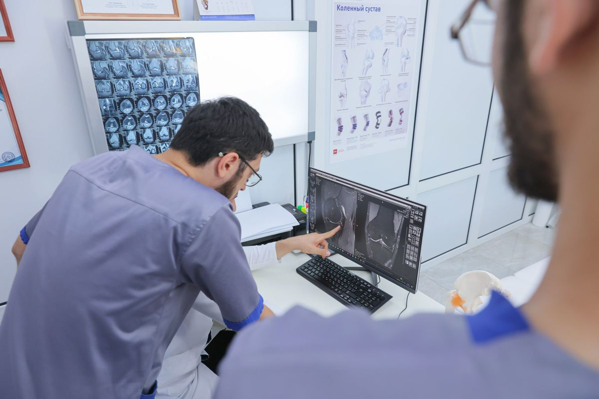
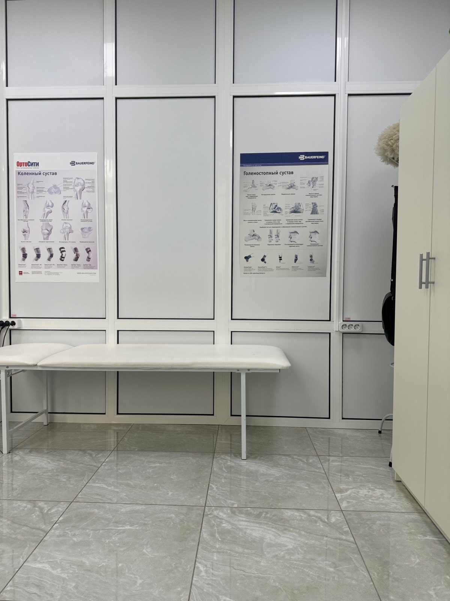
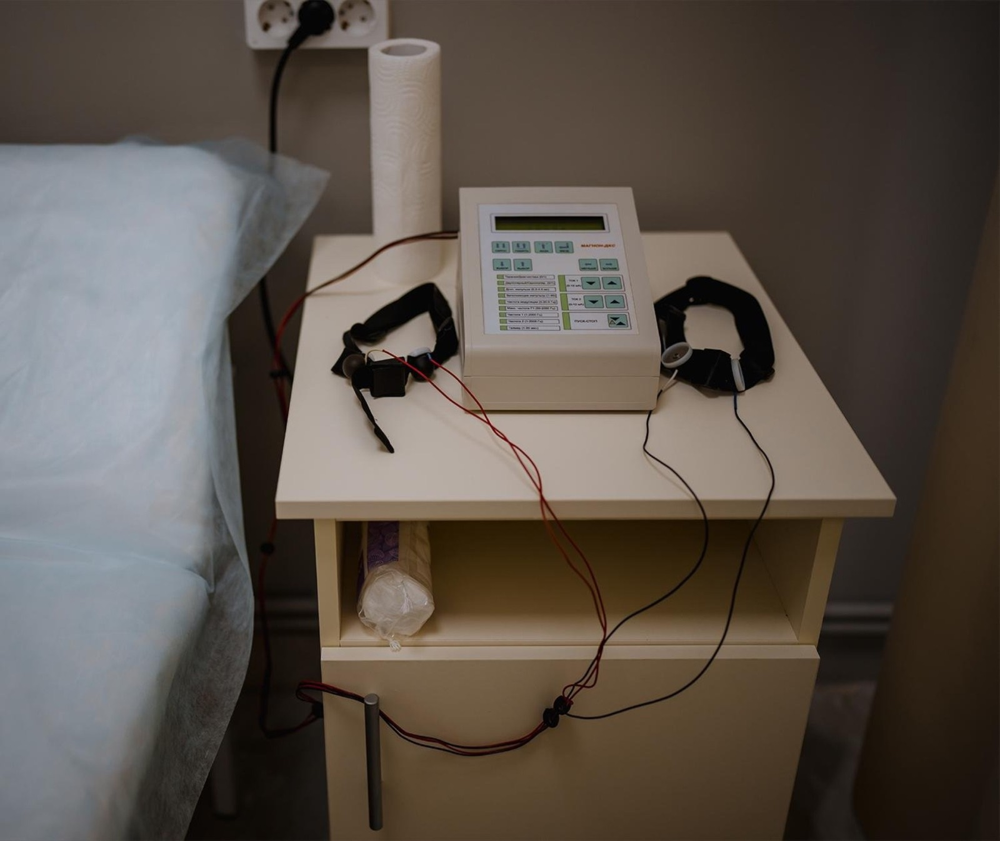
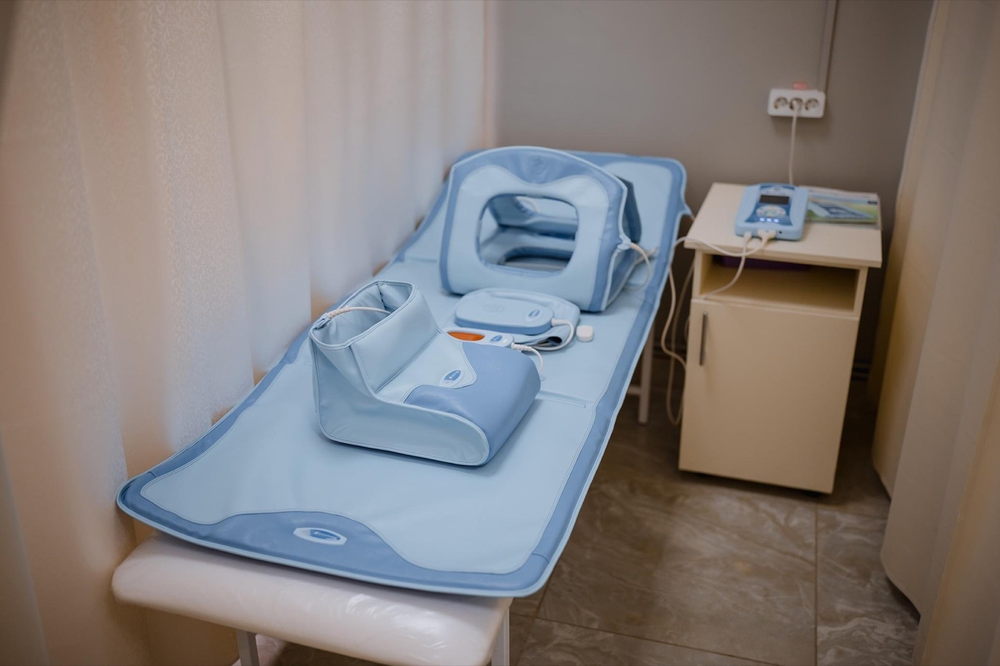
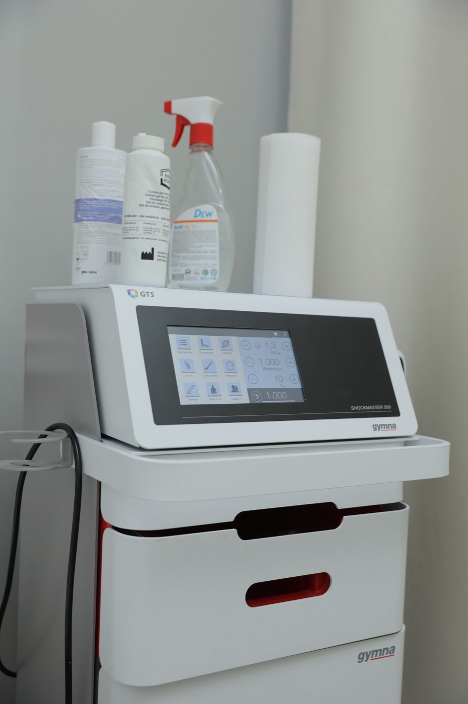

Хаджалов Абузар Магомедович
Травматолог-ортопед, кистевой реабилитолог
Суставы, травмы, восстановление после операций, PRP.
до 3 000 ₽
Услуги
Травматолог-ортопед
Болит колено на лестнице, щёлкает, отекает после нагрузки, сказали «артроз». Ортопед осмотрит, разберёт снимки и составит план лечения — цену вы узнаете до начала.

Суставы, травмы, восстановление после операций, PRP.
С чем работаем
Второе мнение
Бывает, что от операции можно отказаться — если вовремя начать физиотерапию и лечебную физкультуру. Ортопед посмотрит ваши снимки и честно скажет, есть ли смысл пробовать без операции.
Методы лечения

наш зал лечебной физкультурыИндивидуально 60 минут, со взрослыми и детьми. Гимнастика при сколиозе по методике СИАС.
от 2 000 ₽Пяточная шпора, плечо, локоть, спина
до 3 000 ₽Для суставов и связок
до 10 500 ₽

Введение в сустав или блокада позвоночника — по назначению врача
3 000 ₽Высокоинтенсивная магнитотерапия
до 2 000 ₽Взрослые и детские
от 9 500 ₽Нажмите на любую методику выше — коротко расскажем, что это такое.
Фото из кабинетов центра. Аппарат и параметры процедуры подбирает врач по показаниям.

Общество с ограниченной ответственностью «Центр восстановительной медицины «ОРТО-РЕКАВЕРИ» (ОГРН 1210500012392, ИНН 0572029293). Адрес: 367015, Республика Дагестан, г.о. город Махачкала, г. Махачкала, пр-кт Имама Шамиля, д. 35А, этаж 1. Лицензия на медицинскую деятельность № Л041-01172-05/00620772 от 12.10.2022, выдана: Министерство здравоохранения Республики Дагестан. Электронная почта для обращений: orto_recovery1805@mail.ru. Информация на сайте не является публичной офертой и не заменяет консультацию врача. Демо-версия сайта, подготовлена для обсуждения с центром.
Пример концепции. Фото врачей, процедур и кабинетов — центра (фотосессия 2024 со старого сайта); фото на первом экране, «Стопа», «Реабилитация» и борьба — Unsplash. Цены — прайс клиники.